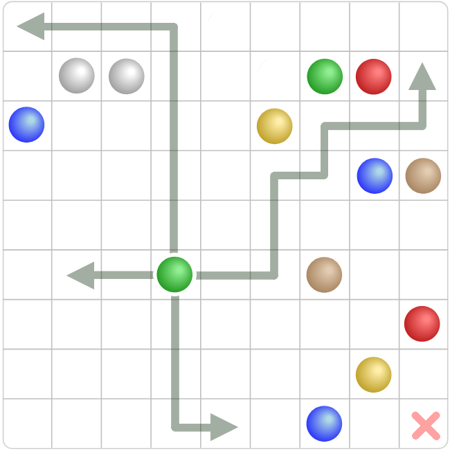
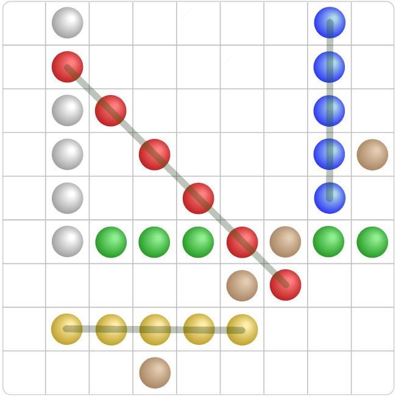
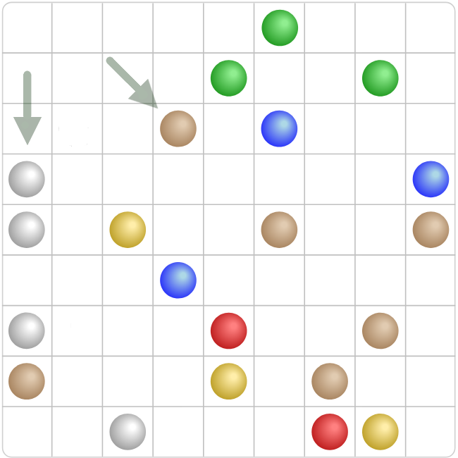
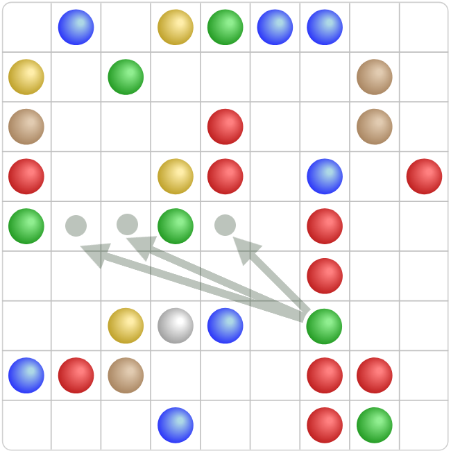
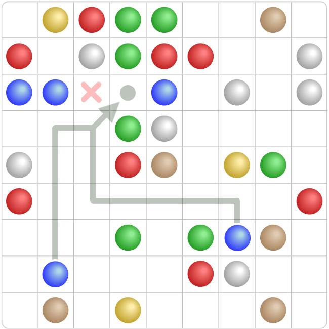
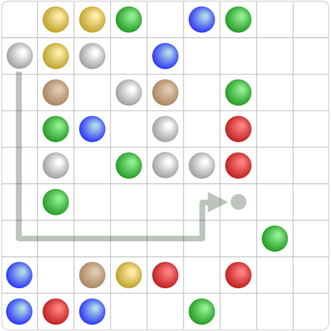

• Шары / Color Balls •
Логическая ○ стратегическая игра ○ головоломка
На главную страницу
Как играть
⚪ Головоломка на поле 9×9 клеток, где нужно собирать линии из шариков одного цвета и не допускать заполнения поля.
Цель игры
⚪ Набрать как можно больше очков, выраженных в единицах пути (миллиметрах), пройденных улиткой :-) до цели (👉 яблока), чтобы выиграть. Или хотя бы проползти как можно дальше, поставив личный рекорд.
Основные правила
⚪ Начало хода.
В начале каждого хода на поле случайным образом появляются три шарика разных цветов.
⚪ Перемещение.
Можно переместить любой шарик на свободную клетку, но только если между текущей и целевой клеткой есть путь из пустых клеток (по горизонтали, вертикали или с поворотами — как в лабиринте, без «перепрыгивания» через занятые клетки). По диагонали шарики НЕ ходят.

Вот так они ходят. В правый нижний угол шар зайти не может. Туда проход со всех сторон заблокирован.
⚪ Создание линии.
Если после перемещения образуется линия из 5 или более шариков одного цвета (по горизонтали, вертикали либо диагонали) — эти шарики исчезают, и очки начисляются (расстояние сокращается).

Пример: только красные, синие и жёлтые шары выставлены в линии правильно, поэтому они уходят с поля.
⚪ Очистка поля.
Исчезнувшие шарики освобождают место, и это помогает не дать полю заполниться.
⚪ Продолжение игры.
После каждого хода, ЕСЛИ линия не удалилась, на поле снова появляются 3 новых шарика.
⚪ Конец игры.
Когда поле становится заполненным так (на 98%), что нет больше свободных мест для появления трёх новых шариков, игра завершается. Проигрыш :-(
Как начисляются очки
⚪ Очки зависят от количества шариков, которые убираются за один ход: чем длиннее линия, тем больше баллов. Кстати, убрать 6 шариков за раз выгоднее, чем дважды по 5. Лучше 7 за раз, чем трижды по 5, и так далее. В общем, при возможности лучше убирать как можно больше за один ход.
| Убранные шары | Очки |
| 5 | 30 |
| 6 | 70 |
| 7 | 120 |
| 8 | 180 |
| 9+ | 250 |
Стратегия и полезные советы для хорошей игры
⚪ Основа основ.
Не трать ходы зря, начиная собирать линию с одного или двух шариков. В первую очередь, ищи на поле такие рандомные комбинации, где ТРИ шара УЖЕ сами встали на одну линию, чтобы её и завершить. На рисунке ниже белые и коричневые уже стоят на месте. Вот эти линии и следует "добивать". Не целесообразно продолжать линию из зелёных шаров, где их тут только два. Жди, когда к ним туда случайно прибудет третий зелёный шарик. Если часто играть ряд только с двух шаров, новые шары прибывают на поле быстрее, чем сыгранные исчезают. Ведь, добавив три шара к двум, и убрав так пять, за эти потраченные ходы появится шесть новых. Поле в таком случае будет неизбежно забиваться.

Уже есть три шара в ряду. К ним надо играть.
⚪ Правильная расчистка.
На картинке ниже зелёный шар мешает завершить линию красных. Следует убрать зелёный шар не абы куда, а так, чтобы одним ходом убить сразу двух зайцев. А именно туда, куда указано стрелками 👉 к двум зелёным шарам. Таким образом, одним ходом расчищаем путь к одной линии и сразу получаем другую линию из трёх. В этом основная стратегия игры: каждый ход тратится с максимальной пользой и с планом на будущее.

Убираем блокирующий шар всегда туда, чтобы одним ходом расчистить дорогу к одной линии и получить продолжение другой линии.
⚪ Избегай самоблокировок.
Ниже на картинке видна линия из трёх синих шаров, которую надо "добить". Свободные синие шары для этого на поле имеются, и путь на места в линии открыт. Но первым ходом следует загнать синий шар сначала вправо, как показано стрелкой, чтобы этот шар не помешал загнать в линию другой синий шар на следующем ходе. Ведь, если сначала поставить шар влево (отмечено красным, как не надо), он заблокирует дорогу следующему шару, чтобы завершить линию.

Не перекрывай первым ходом себе дорогу для следующего хода.
⚪ Выгребай углы.
Если есть возможность и выбор, лучше использовать в первую очередь те шары, которые находятся у края или в углу поля, а не те, которые в центре. На примере ниже, чтобы завершить линию белых в центре, лучше выбрать и сыграть белый шар, который не рядом, а от края. Такие шары сильно ограниченны, доступ к ним часто становится закрыт, и они быстро начинают накапливаться в углах. Надо стараться не допускать этого. Ведь белый шар в центре и так легкодоступен и с большей вероятностью может быть использован в любой момент позже. Забирай лучше сначала труднодоступные шары от края и с углов.

Лучше взять самый дальний шар из имеющихся, пока это возможно.
⚪ В общем, всегда планируй наперёд. Думай не только про текущую линию, но и про то, куда потом можно будет двигать другие шарики.
Не спеши убирать короткие комбинации. Если можно собрать линию из 6 или 7 шариков вместо 5 — лучше подождать и получить больше очков.
Следи за цветами. Обращай внимание, каких цветов на поле много: именно из них проще собирать длинные линии.
Фокусируйся на центре: собирать линию в центре легче, чем у края.
Избегай изоляции. Не загоняй шарики в углы или узкие «карманы», откуда их потом невозможно будет переместить.
Со временем станет проще видеть выгодные ходы и выстраивать стратегию.
На главную страницу